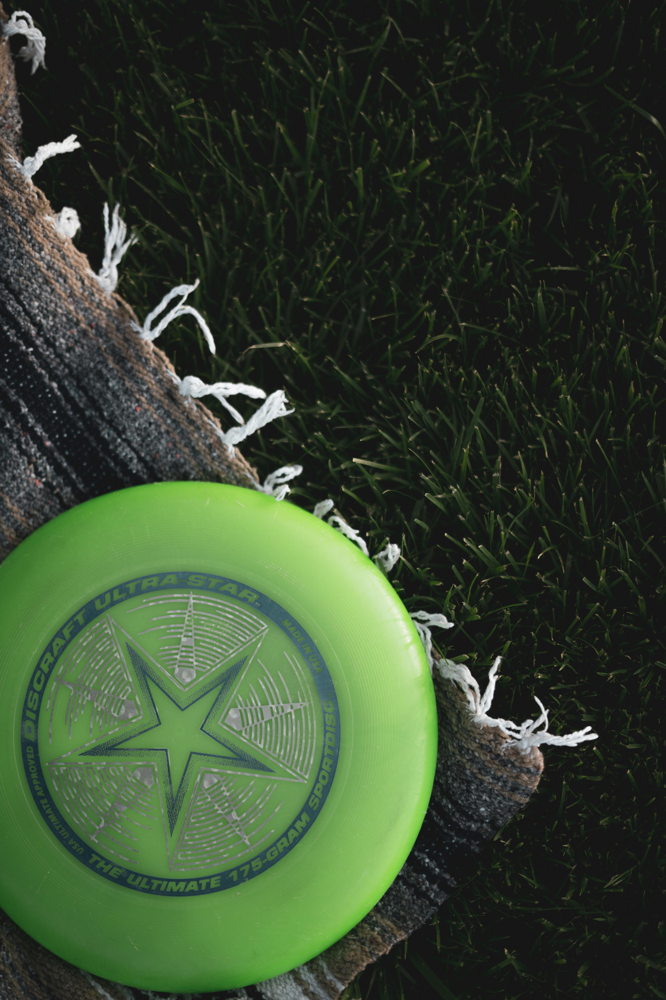
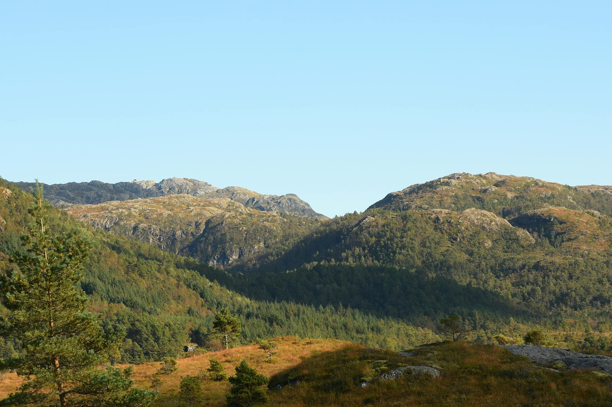

Veckans aktivitet

Vandra i Jämtlandsskogarna
Upplev Ånges fantastiska natur med vandringsleder, sjöar och utsiktsplatser för hela familjen.
Matrekommendation

Lokala smaker
Testa lokala caféer och restauranger med svensk husmanskost, nybakat fika och norrländska specialiteter.
Snabbkategorier
Fiske
Familj
Musik
Utflykter
Om Ånge kommun

Ånge kommun erbjuder lugn natur, rikt kulturliv och aktiviteter året runt. Här möts skogar, sjöar och lokala evenemang i hjärtat av Norrland.